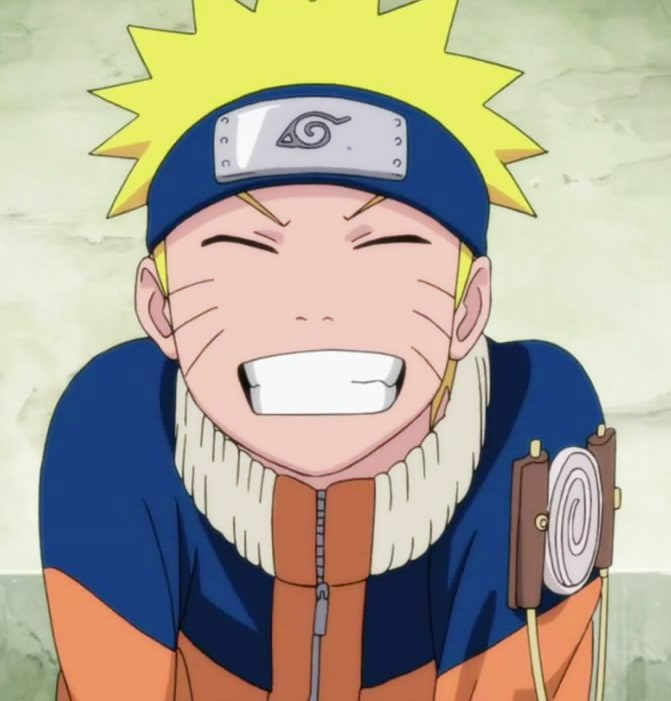
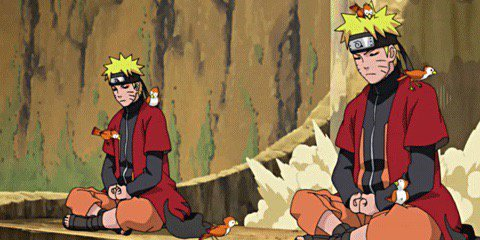

Naruto Uzumaki, a young ninja who seeks recognition from his peers and dreams of becoming the Hokage, the leader of his village. The story is told in two parts – the first set in Naruto's pre-teen years, and the second in his teens.
The anime is more than worth watching. And talking about episodes i would recommend you to start it and watch it till 100, actually even 50 is enough and i can guarantee you will regret asking this question. Once you start watching it you wont be able to stop and in the end even wish for more episodes, believe me i finished 500 episodes and 3 movies in 5 weeks only because me and my sister were being competitive even though i barely slept also, it was during online school but it was fun. Naruto Uzumaki is a shinobi of Konohagakure's Uzumaki clan. He became the jinchūriki of the Nine-Tails on the day of his birth — a fate that caused him to be shunned by most of Konoha throughout his childhood. After joining Team Kakashi, Naruto worked hard to gain the village's acknowledgement all the while chasing his dream to become Hokage. In the following years, through many hardships and ordeals, he became a capable ninja, regarded as a hero both by the villagers, and soon after, the rest of the world, becoming known as the Hero of the Hidden Leaf. Originally, Naruto was a rather inept ninja, failing to graduate from the Academy three times. Through sheer determination and training however, his skills rapidly improved to defeat strong genin like Neji Hyūga, Gaara, and Kabuto Yakushi, earning acknowledgement from all the Sannin for his potential. Under various tutelage, Naruto was able to defeat various members of Akatsuki, ultimately earning praise from Konohagakure as a Hokage-material hero. Naruto's personally defeated various reincarnated Kage and jinchūriki during the Fourth Shinobi World War, with many believing he was the central key to winning the battle. By adulthood, his prowess made him the Seventh Hokage, regarded as the strongest shinobi in history and having command of overwhelming jutsu With the combined might of Sasuke, noted as his only rival as a shinobi, they are said to be able to destroy a continent. Together, they overpowered Momoshiki Ōtsutsuki who absorbed Kinshiki Ōtsutsuki, and pushed Jigen's body to its limit. Overall, he could compete against if not defeat world-threatening opponents, such as Madara Uchiha, Kaguya, Toneri Ōtsutsuki, and while fighting at his absolute peak overwhelm Isshiki Ōtsutsuki. As an Uzumaki and a reincarnation of Asura Ōtsutsuki, Naruto has massive reserves of strong chakra, at least four times greater than Kakashi's, and described by Karin as "bright and warm." His initial poor control of it was offset by his sheer reserves, which were large enough to endure three and a half days of constant battle against several powerful opponents. Only by the end of his battle against Sasuke did he show exhaustion, and even then could still fight to a standstill and eventual victory.Naruto's control improved greatly over time; able to transfer his chakra to others, and perform one-handed hand seals.Naruto's powerful life-force grants him an extreme longevity, healing power, stamina, and vitality; this allowed him to survive the extraction of a tailed beast, though he required aid from Sakura to stay alive Naruto also learned how to counter genjutsu from Jiraiya, but is limited In adulthood, Naruto's chakra is powerful enough to intimidate Kawaki into submission and destroy high-level barriers simply by releasing a burst of it. He could repel Shikamaru's Shadow Imitation Technique, a feat that no one else could do.His chakra, when he combined it with his son's Vanishing Rasengan, turned it into a gigantic Ultra-Big Ball Rasengan able to kill the empowered Momoshiki Ōtsutsuki who tried to use a copy of the technique to defeat his. His chakra reserves were also so vast that he was able to overload Delta's chakra-absorbing eye with a continuous Rasengan-assault and still primed to defeat her.
  Fairy Tail naruto haikyuu Alexa's Amime